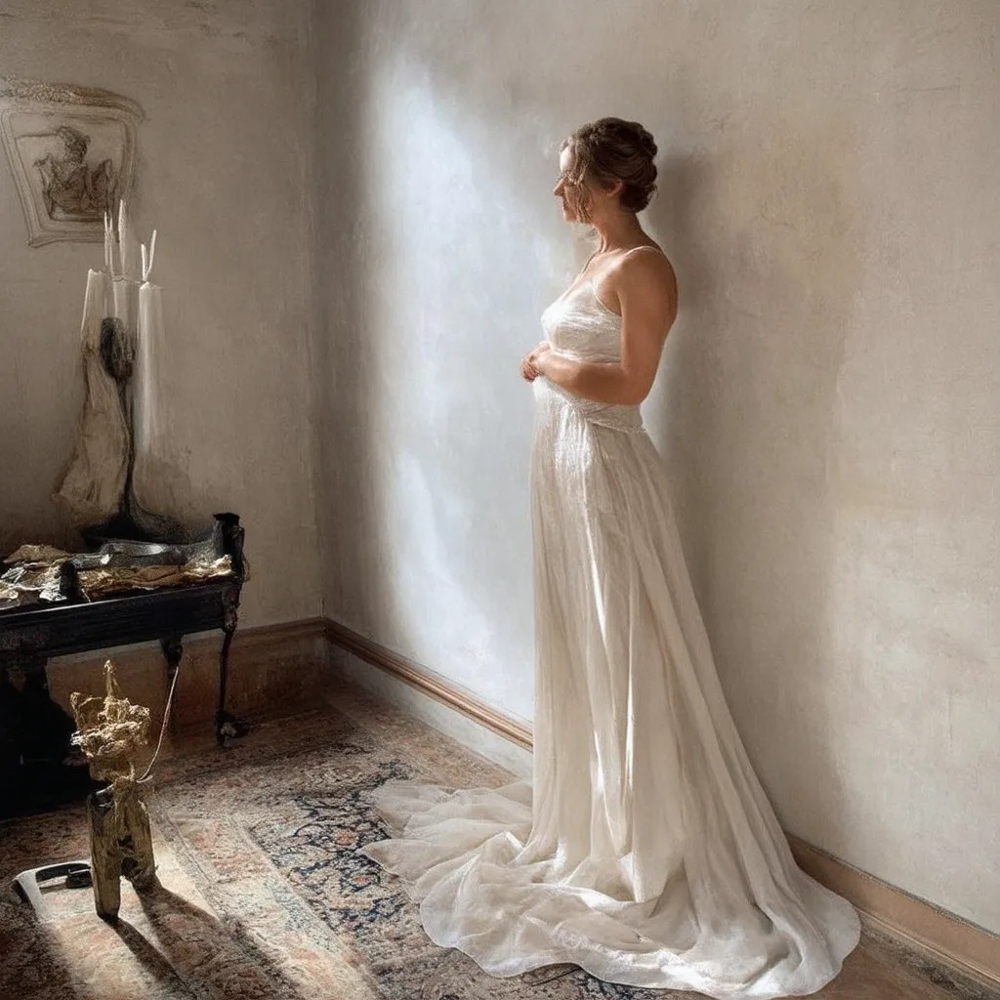

# ¿QUÉ ES UNA MUJER BELLA?
> “ella apareció en la sala de en medio de los vasallos, su belleza
resplandeció en tal forma, que se iluminaron los muros, como si
diera el sol mañanero”. Tristan e Isolda

Generado con Stable Diffusion 3 Medium
Generado con Leonardo AI
> "Los ojos y labios de Sonoko resplandecían. Su belleza, al
recordarme mi impotencia, me pareció opresiva. Y esta sensación hizo
que la existencia de la misma me pareciera efímera". Confesiones de
una máscara, de Yukio Mishima
Generado con Leonardo AI
# KIM KARDASHIAN
¿Si le preguntamos a ChatGPT?
Dame varias descripciones fisicas de kim kardashian, ve variando
como si fueses un escritor famoso de cada epoca importante de la
literatura, desde la antiguedad hasta en el siglo XXVI